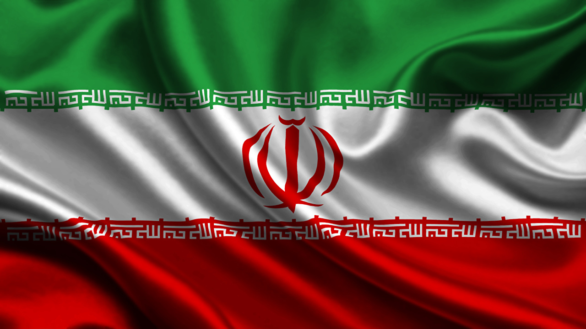

U.S. and Iran Remain at Odds
- 
The United States and Iran remain at odds over what comes next in their standoff over Iran's nuclear ambitions.
Iran's supreme leader said Sunday that all U.S. sanctions must be lifted before Tehran will return to its commitment under the 2015 nuclear deal. And, in an interview airing Sunday, President Biden said the United States won't lift sanctions first.
Ayatollah Ali Khamenei's remarks to an audience of military commanders confirmed Tehran's position that all sanctions must be lifted before Iran resumes full compliance with the deal's limits to its nuclear program. The remarks were carried by Iranian state television.
In the past, President Hassan Rouhani has said Iran could return to compliance within hours of the U.S. sanctions being lifted.
But on Sunday Khamenei appeared to suggest a longer timeline. "The U.S. must lift all sanctions in practice, then we will do verification and see if the sanctions were lifted correctly, then we will return to our commitments," he said.
In an interview, CBS Evening News's Norah O'Donnell asked Biden: "Will the U.S. lift sanctions first in order to get Iran back to the negotiating table?"
"No," he responded.
"They have to stop enriching uranium first?" O'Donnell asked.
Biden nodded affirmatively.
The Trump administration re-imposed the sanctions on Iran in 2018 — as part of what U.S. officials called a "maximum pressure" campaign — after pulling the U.S. out of the agreement between Iran and six world powers. Under the accord, Iran agreed to limit its enrichment of uranium in exchange for eased sanctions.
Iranian semi-official media reported last month that Tehran was enriching nuclear fuel to 20% purity at its underground Fordow nuclear facility, breaching limits in the agreement. That level of enriched uranium can be used to make medical isotopes. Enrichment at 90% is required to make a nuclear weapon.
After years of escalating tensions under Trump, the Biden administration says it plans to work to "get back to diplomacy" in an effort to curb Iran's nuclear ambitions. Jake Sullivan, Biden's national security adviser, said late last month that Trump-era policies had worsened an "escalating nuclear crisis" with Iran.
"Iran's nuclear program has advanced dramatically over the course of the past couple years," said Sullivan, who helped negotiate the Iran nuclear deal for the Obama administration. "They are significantly closer to a nuclear weapon than they were when the previous administration withdrew from the [nuclear deal]. Their ballistic missile capability has also advanced dramatically."
U.S. tensions with Iran have been high for decades, and rose dramatically after the killing early last year of Maj. Gen. Qassem Soleimani, the commander of Iran's elite Quds Force. Days later, Iran fired ballistic missiles at bases hosting U.S. troops in neighboring Iraq.
A top Iranian scientist believed to be responsible for developing the country's military nuclear program was killed in a November 2020 attack Iranian officials blamed on Israel, prompting threats of retaliation from Iran's top leaders.
Then in December, the Trump administration announced sanctions on two Iranian officials over the disappearance and probable death of Robert Levinson, a retired FBI agent who went missing in Iran in 2007 during an unauthorized mission for the CIA.
Source